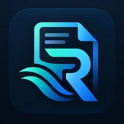
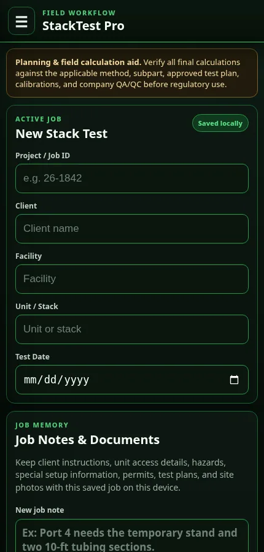

Business Systems
Custom Software
Internal web apps, operational systems, customer and employee portals, and purpose-built tools.
Explore custom software →Web applications, workflow automation, reporting systems, and industrial software for businesses across Louisiana and the Gulf Coast.
Gulf Coast Code Works builds practical business systems around real workflows. If your team is fighting spreadsheets, repetitive data entry, disconnected forms, field-to-office communication, or reporting bottlenecks, that is where the work starts.
Internal web apps, operational systems, customer and employee portals, and purpose-built tools.
Explore custom software →Replace copy-and-paste work, repeat entry, email handoffs, and manual status tracking with structured workflows.
Explore automation →Turn Excel and operational data into focused QA/QC, dashboards, reports, trends, and exception tracking.
Explore reporting →Stack testing, CEMS/RATA, air monitoring, QA/compliance, field operations, and technical reporting workflows.
Explore environmental software →Mobile-friendly business applications that work in the browser and can support teams in the office and field.
Explore web apps →Custom print-ready models built from an idea, sketch, reference, logo, or dimensions.
Explore 3D design →These projects started with day-to-day operational friction and grew into focused software products.

ReportFlow ProTurns working Excel files into focused QA/QC, dashboards, and client-ready reporting.
View case study →

An operational foundation for fenceline, ambient, CEMS, and air-quality monitoring programs.
View case study →Project management, environmental testing, industrial field operations, QA/QC, client deadlines, equipment, technical requirements, and reporting all shape how I approach software. The goal is not to build technology for technology's sake. It is to make the work cleaner.
“Start with what is slowing the team down. The technical solution comes second.”
Gulf Coast Code WorksYou do not need a technical specification. Start with the problem and we will work from there.